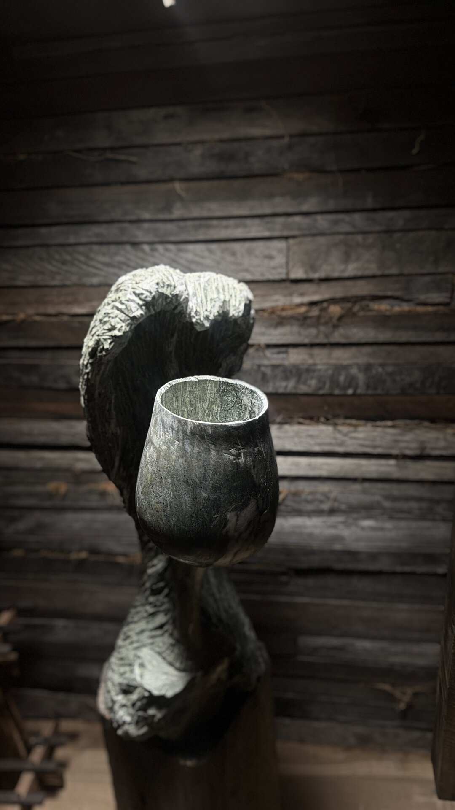

N° 01 —
Sixteen figures. Ironbark, reclaimed.
N° 02 —
A cellar. Built from what was forgotten.
N° 03 —
Existing gates. Re-clad. Arrival withheld until passing through.

N° 04 —
Nobody commissioned any of it.